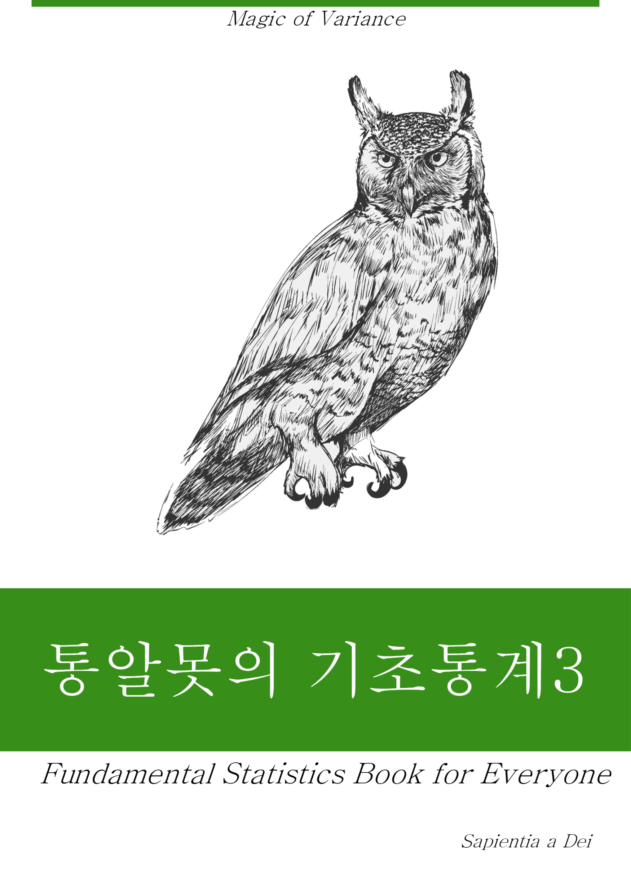

통알못을 위한 기초통계 3
서문

Saientia a Dei입니다. 2019년 1월부터 YouTube 통알못을 위한 기초통계 강의를 시작하게 되어 2021년부터는 이를 책으로 만드는 작업을 시작했습니다. 개인사정으로 인해 몇 년간 지지부진 하던 상황에서 마음을 다잡고 책을 썼습니다. 여러가지 옵션을 고민하던 중에 micro-web-book을 결정하였습니다. micro-web-book이란 개념도 제가 혼자 만든 것인데, 소책자 크기로 하여 주제별로 쪼개어 제공하는 것을 의미 합니다. 여기에는 나름 여러가지의 고민이 있었습니다. 이미 꽤 많은 양의 통계강의를 YouTube로 만들은데 반해 이 모든 내용을 한 번에 책으로 쓰기는 것이 제 개인적인 역량을 봐서는 단 기간에 어렵다고 판단한 것도 한가지 이유입니다. 그러나, 이보다 더 중요한 이유는 제 서재의 수많은 통계책을 보면서 고민한 것이 있습니다. 저도 미국에서부터 꽤 많은 통계책을 사서 읽었지만 수 백 페이지 정도의 두꺼운 통계책 중에 처음부터 끝까지 모두 다 읽은 경우는 정말 한 두 권 정도에 불과 했습니다. 저의 경우는 특정 부분이 필요 해서 구매한 통계책이 대부분이었습니다. 그래서 저도 통알못을 위한 책을 쓰는 마당에 보다 미래 지향적이고 실용적인 방법을 찾아야겠다는 마음을 먹었습니다. 운 좋게도 어느 출판사에서 책을 출판하자는 제안이 있기는 했지만, 돈 보다는 지식의 공유가 더 중요하다는 생각에 오픈 소스 북으로 책을 내기로 했고 이를 주제별로 쪼개서 시리즈물로 책을 쓰는 것이 좋겠다고 생각했습니다. 그러니 독자분들께서도 필요한 주제별로 micro-web-book을 읽으실 것을 권해드립니다. 두껍고 무겁기만한 종이책이 읽혀지지도 않은 채로 서재 어딘가에 몇 년간 방치되는 것 보다는 이 편이 낫다고 생각됩니다. 필요에 따라서 스마트폰이나 패드를 이용하셔서 출퇴근 시간 혹은 자투리 시간에 읽으실 수 있을 것입니다.
3권은 일반적으로 가장 많이 사용되는 통계 방법에 대해 공부할 것입니다. 1장은 카이제곱 검정으로 시작하여 2장에서는 통계의 꽃이라고 불리는 회귀분석, 3장에서는 조절효과와 매개효과 마지막 4장은 로지스틱 회귀분석으로 마무리됩니다. 아마도 가장 많이 기다리셨던 책이 아닐까 생각됩니다.
여전히 통계 전공자도 아닌 제가 강의를 하고 책을 쓰는 것이 부담스럽습니다. 이 책을 보시는 통계학과 교수님들과 전공자 분들에게 다시 한 번 너그러운 양해를 부탁드립니다. 정통 통계학적인 측면에서 보자면 오류가 있을 수 있습니다. 이 책의 내용에 대한 비판은 제가 감당할 부분이나 부드럽고 건설적인 비평을 부탁드립니다.
이 책은 YouTube의 통통튜브 (통알못을 위한 통계튜브)의 온라인 비디오 강의를 보다 자세하게 풀어 말로 적은 것입니다. 처음 보시는 분들은 이 책을 한번 가볍게 보시고 난 후 각 절의 마지막에 있는 YouTube 바로가기 링크를 통해 비디오로 한 번 보시고 다시 본문을 읽어 보실 것을 권해드립니다. 한 번에 모든 것을 이해할 수 있다면 좋겠으나 반복 학습이 보다 효과적이라고 생각합니다. 유튜브 주소는 아래와 같습니다. 네이버 블로그에도 링크가 되어 있으니 편하신 플랫폼으로 비디오를 보시면 될 것 같습니다. 더불어 실습에 사용될 모든 샘플파일은 GitHub에 저장되어 있으니 자유롭게 다운로드 받아 사용하시기 바랍니다.
마지막으로 제가 유투브를 통해 공개한 통통튜브의 내용이나 이 책의 내용을 무단으로 사용하지 마시길 부탁드립니다. 무료로 공개한 내용이지만 저의 노력과 오랜 기간의 아이디어가 담긴 것들입니다. 가끔 이런 무료공개 정보는 저작권이 없다고 생각하시고 심지어 제 강의 내용을 상업적 용도로 사용하시는 분들이 있는데 이는 분명한 저작물권의 침해입니다. 혼자 공부하기 위해 자료를 만들어 혼자서 보는 것은 누가 뭐라 할 수 없으나 정리된 내용을 인터넷으로 공개하거나 상업적인 목적으로 사용 혹은 배포하는 것은 분명 문제의 소지가 있음을 알려드립니다. 법적인 책임을 가리는 일이 없기를 바랍니다.
부족한 제 강의와 책에 관심을 가져주시는 모든 분들께 감사의 말씀 올립니다.